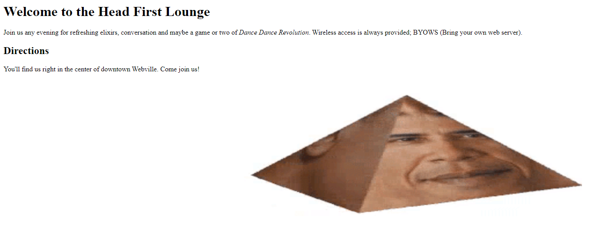
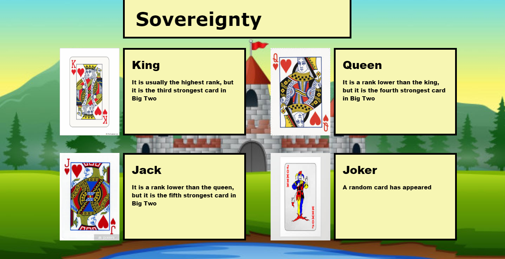
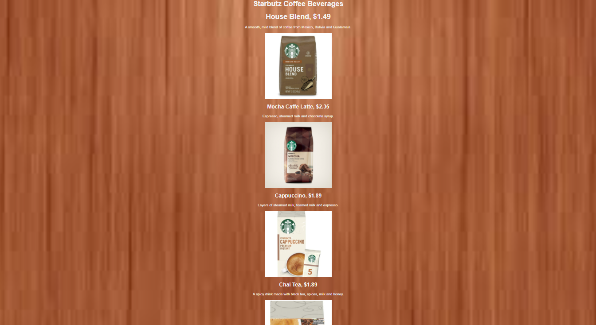
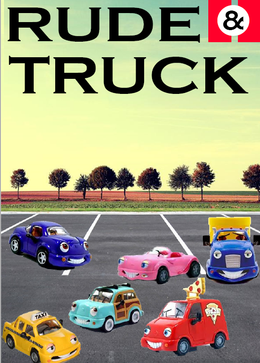

The first thing I ever made in computer studies, rather hideous if you ask me.
Originally made by Ricky Zhao, remade by me as my very first published computer class project.
A project that I didn't publish, and the original version of this website.
This was my first project in photoshop, a mock of a cover of a Road and Track magazine
I will hopefully update this page with all future projects I make in computer studies class.